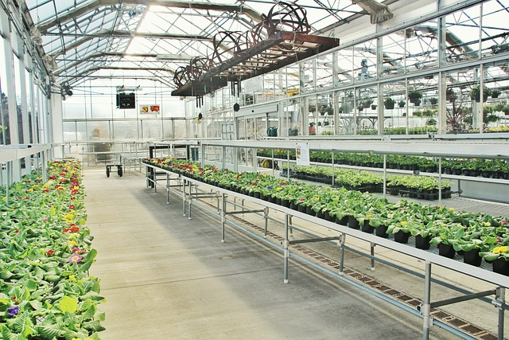

Junte-se a nós
Torne-se um colaborador
- Seja membro
- Interaja diretamente nas ações da equipe
- Produza ideias de desenvolvimento
- Ajude a natureza
Oferecemos parcerias e colaborações científicas
A BioTech trabalha em parceria com especialistas em biologia, ecologia e tecnologia ambiental para garantir a precisão e qualidade dos conteúdos.
Biotech
A BioTech nasceu em 2023, a partir de um projeto escolar que rapidamente evoluiu para uma iniciativa inovadora em educação ambiental e tecnologia. Tudo começou durante uma aula prática de biologia, quando a professora apresentou aos alunos o fascinante mundo dos mini ecossistemas fechados, os chamados terrários. A proposta era simples: construir um pequeno ambiente autossustentável em um recipiente transparente e acompanhar, ao longo das semanas, como a natureza se organizava e se mantinha em equilíbrio.
O exercício encantou Juan Caue e Gustavo Targino, que logo perceberam o potencial educativo daquela experiência. A construção de terrários combinava ciência, criatividade e sustentabilidade, além de oferecer uma oportunidade única de aprender na prática conceitos como ciclos de nutrientes, fotossíntese e equilíbrio ecológico. Motivados pela vontade de compartilhar esse conhecimento com mais pessoas, eles tiveram a ideia de criar uma plataforma digital interativa para ensinar como construir e manter mini ecossistemas em casa ou na escola.
Com o apoio de sua professora e de outros três especialistas em biologia e tecnologia, Juan e Gustavo deram os primeiros passos para transformar a ideia em realidade. O projeto foi batizado de BioTech, uma iniciativa que une ciência e tecnologia para promover a educação ambiental de forma prática, acessível e inovadora.
-
O projeto é desenvolvido com uma abordagem colaborativa, onde cada membro tem um papel específico:
-
Além de fornecer conhecimento técnico, a BioTech busca despertar a consciência ecológica, mostrando como pequenos hábitos podem fazer uma grande diferença no cuidado com o planeta.